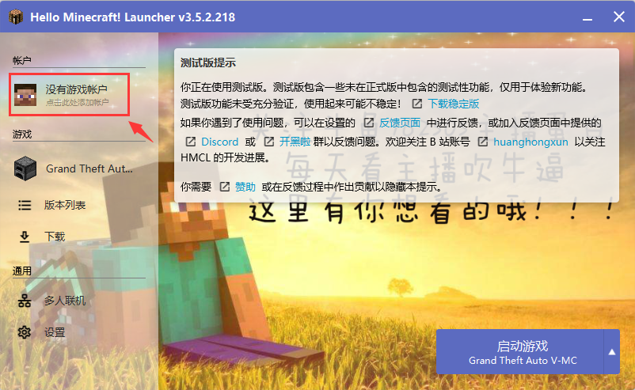

在上一篇中，我们学到了如何设置游戏启动项
那么这一篇就让我来教你，如何设置游戏账户并启动游戏吧
如图所示，在启动界面的左上角有一个【没有游戏账户】，我们点击它
点击后便进入了，账户列表页面
让我依次的来为你介绍，这些账户的添加
离线模式
在用户名栏里写入，你想在游戏里显示的名字
点击登录后，便创建了一个账户

如图所示
不了解请勿触碰，以免不得已的意外

Mojang账户
这是官方是账户，但被微软收购后，账户登录方式已经改变了，如果你的账户还未迁移的话，才可以用
在『用户名』里写入你的正版账户『邮箱』
在『密码』里写入你的『密码』
点击登录后，如果密码无错误的话，便会登录成功

微软账户
这也是官方是账户，是微软官方的账户，如果你的Mojang账户迁移了，或者购买了新的Minecraft，那么就得用这个登录
直接点击『登录』，便会在『浏览器』里自动跳出『授权页』并复制『授权码』
在『授权页』填写『授权码』，之后便会进行『登录验证』，验证完成后，点击『是』后，便会自动登上了

这是第三方如，皮肤站，统一凭证使用的登录方式
使用方法(用皮肤站举例)
首先选择一个皮肤站，去相应网站注册或者添加完服务器后，在服务器选项旁边有注册按钮，注册完成后
找到网站提供的API地址，将其粘贴上去，然后点击下一步
点击完成，之后便会出现在账户列表中
皮肤站官网和API：
Blessing Skin：
https://skin.prinzeugen.net/api/yggdrasil/
Little Skin：
https://littleskin.cn/api/yggdrasil

点击添加后的服务器，如图里的LittleSkin
之后便会弹出登录窗口，在从网站上注册的账户与密码，在这里依次填写即可
设置到这里就完了，现在返回启动界面，点击启动游戏就能启动了！！
好了，这就是HMCL启动器的基础教程了，